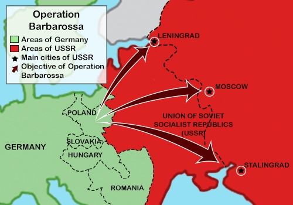
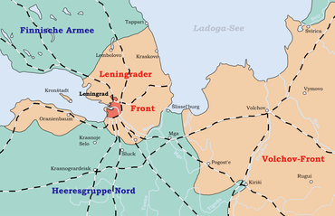
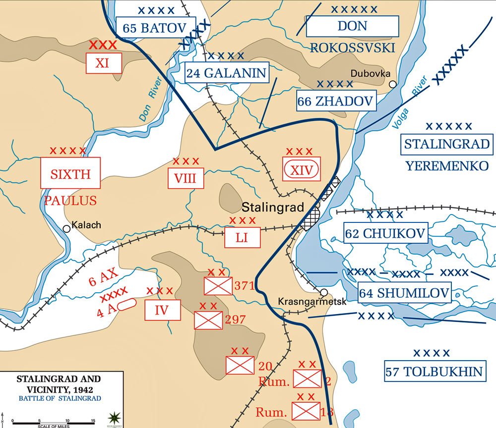

Pre-invasion: In the months following 1941, troops, supplies and later tanks were continuously mustered near the Soviet border. The invasion was originally going to take place on the 15th of May but plans were delayed due to Italy being unable to occupy Greece and Yugoslavia, the weather wasn’t favorable either.
During the 1930s and forward, purges of military personal, political opponents and farmers were common. This left the Red army in lack of leadership, which was shown during the winter war against Finland in 1939. Many commanders and officers were young and unexperienced, along with most of their tanks having thin armor and weaker guns. The Red army air force were also beginning to replace their old planes.
At the outbreak of Operation Barbarossa there were nearly 10 thousand tanks in the western parts of Russia. These were mostly T-26 (15mm armor, 45mm gun) and BT-7 (22mm armor, 45mm gun) light tanks, severally outmatched by the German Panzer III (70mm armor, 50mm gun) and Panzer IV (30-80mm armor, 75mm gun).
Invasion: In the early morning on the 22nd of June 1941 the Germans were pouring over the Soviet border. The Luftwaffe 2500-2800 planes strong flew over the border and devastated Soviet airfields and bases, followed by the German Panzer divisions numbering around 3600 tanks encircling the confused and disorganized red army. Around 3 million infantry troops eliminated the encircled pockets created by the Panzer divisions. The Red army was not prepared for the Blitzkrieg (Lightning war). The red army at the time consisted of around 2.9-3.3 million infantry, 10 thousand tanks and nearly 8000 airplanes.

Operation Barbarossas objectives. Source
The Germans were split in to three main ground: Army group north, Army group center and Army group south. Army group north were heading for Leningrad while groups center and south headed for Moscow and Ukraine.
Army group north reached the city of Leningrad on the 8th of September 1941.
Army group center reached the outskirts of Moscow on the 2nd of October 1941.
Army group south reached Stalingrad on the 23rd of August 1942.
Leningrad: On the 23rd of August 1942 the Germans supported by Finnish forces in the north had cut of the last road leading to Leningrad. Leningrad was of great importance for the Soviet Union, it was the revolutionary capital, large industrial factories and the home base for the Soviet Baltic fleet. Hitler wanted to take Leningrad for many reasons, one of them was to demoralize the people and another involved a factory producing the new Soviet KV-1 heavy tank (90mm armor, 76mm cannon).

Map over Leningrad after being encircled. Source
There were over 2 million civilians in the city at the time. On September 8th the Luftwaffe bombed and set fire to warehouses holding large portions of the city’s food supply. In October the last railway leading to the city was cut and by early November the city was fully encircled except for Lake Ladoga to the east.
At the eastern bank a new port was built from scratch for boats to be able to bring in food, supplies and evacuate civilians. The winter of 1941 was also one of the coldest in decades, people used whatever could be burnt to stay alive. As winter arrived the lake began to freeze over, boats could no longer be used to bring in supplies. When the ice was solid, trucks loaded with meager amounts of supplies drove over the ice and established the “road of life”. As the months passed food rations were decreasing as low as 250 grams for workers and 125 grams for other civilians. Starvation was a daily occurrence and most people got used to it, there were bodies laying in the streets as no one picked them up. Some resorted to cannibalism to stay alive.
Hitler did not want to waste the resources needed to take the city as he would be responsible for feeding the population and that many tanks were redirected towards Moscow at the time. German scientists and strategists thought that the city could only hold out for a few weeks or so before the city would die from starvation. The Germans mainly focused on restricting supplies from reaching the city and not advancing.
The Soviet forces tried numerous times to end the siege but were beaten back by bad weather and well entrenched Germans. In early 1944 the Soviet had mustered a large enough force to be able to push the entrenched Germans back, and on the 27th of January forced the Germans to retreat south. The siege was over. Civilian casualties are estimated to around one million, mostly from starvation or freezing to death.
Moscow: After nearly three months in to Operation Barbarossa the Germans had advanced significantly in too the Motherland. The Germans were ready to start advancing on Moscow, Russia’s Capital. Hitler and General Fedor von Bock knew winter would soon be upon them and they needed to act fast or they might meet the same fate as Napoleons army. The Soviets also knew this and enacted the “scorched earth” policy too leave nothing for the Germans, burning fields and destroying houses.
On October 2nd 1941 Bock began the march for Moscow. The advance was slow and costly for both sides, the Red army put up stubborn resistance and the rainy weather caused vehicles to get stuck in the mud. Within two weeks the Germans were 27km from Moscow with some soldiers claiming they could see the towers of the Kremlin.
By now the German troops were exhausted and freezing, as winter was approaching. The cold weather caused cooling water on trains, tank fuel and weapon oil to freeze, causing many locomotives and tanks break down. In addition, too Soviet railways having different tracks than the Germans and were often sabotaged. With the troops exhausted and not enough supplies and reinforcements reaching the front the Germans were forced to stop their march. On December 5th Soviet Marshal Georgi Zhukov mustered a huge counter-offensive with fresh troops and tanks from Siberia and eastern Russia. By January 7th 1942 the frontline was driven back significantly, from 100-250km.
The Soviets suffered between 600-700 thousand soldiers, some estimates around one million. The Germans suffered around 250-400 thousand soldiers.
Stalingrad: Army group south had reached the Caucasus and was ordered to split into two, Army group A and B. Army group A were to head towards the Caucasus mountains and capture the oilfields to the south. Army group B were to capture Stalingrad and cut off Soviet reinforcements from the area.
On the 28th of July 1942 Stalin issued order 227, starting the slogan “not one step back”. This order stated that any retreat not authorized by the high command was seen as cowardice and treason, commanders were to be trailed and soldiers shot. Each division was to create a “blocking detachment”, a squad consisting of around 200 men who would shoot or force fleeing soldiers back to battle.
After much stubborn resistance from the Red Army the Germans reached the northern suburbs of Stalingrad and bombed the city with incendiary bombs. This caused enormous destruction and turned the city into ruins. The Soviet Army was pushed into the main city and held their ground, supplied only by the other bank of the Volga river running through the city. At this point fighting took place in close quarters or hand to hand, the city was also a haven for snipers, they could easily hide among the rubble. Veterans adapted new strategies in order to survive. The toughest and most brutal fighting throughout the whole war was said to have happened in Stalingrad.

Rough map over Leningrad when the Germans controlled the western part of the Volga. Source
The Germans managed a few time to make it to the Volga riverbanks but were pushed back by Soviet counterattacks. The situation lasted for months with huge casualties on both sides. But on the 19-23rd of November the Soviets launched a massive counterattack at the northern and southern flanks of the city, surrounding the German 6th army consisting of around 250 thousand men under the command of General Paulus. The Luftwaffe tried to resupply the encircled troops but it wasn’t enough. On January 31 General Paulus agreed to surrender, disobeying Hitler’s orders. On the 2nd of February the last of the 91 thousand surviving Germans Surrendered.
Around 2 million people were killed, wounded or missing after just over 5 months of fighting.